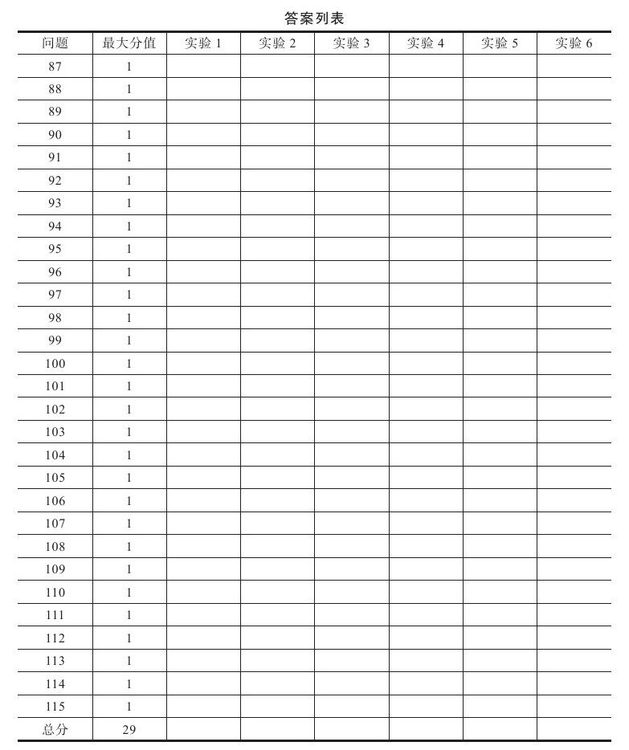

市场有涨有跌，大多数交易者只通过做多赚钱，而错过了市场的另一部分运动，每个新手都该学着做多，但对经验老手来说认识市场价值并做空非常重要。
做空——从市场下跌中获利，是市场老手最爱玩的游戏之一。他们在很多市场上有大量的空头头寸，只要你看到大量的业余交易者冲向市场的一边，就会有更具经验的人站在对立的另一边。问问你自己，哪一边更可能会胜出？
你该像对冲基金那样运作自己的账户，任何时候都持有多单和空单，根据你对市场的判断调整多空比例。在与市场的较量中做空就相当于你双脚着地，这比单纯做多要好得多。
当然，做空也面临挑战，因为你必须精通卖空。本章将测试做空概念和下跌趋势的基本知识，通过计分方式测试你对做空、做空头寸以及选择做空股票方面的掌握程度，同时也会考到有关做空非权益类品种的问题。
请回答本章所有问题并在翻看答案之前把答案记在答案表中。

做空股票的含义是：
1.从你的股票组合中卖出高估的股票
2.卖出借来的股票
3.卖出严重下跌的股票
4.卖出你希望退市的股票